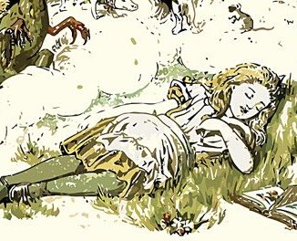
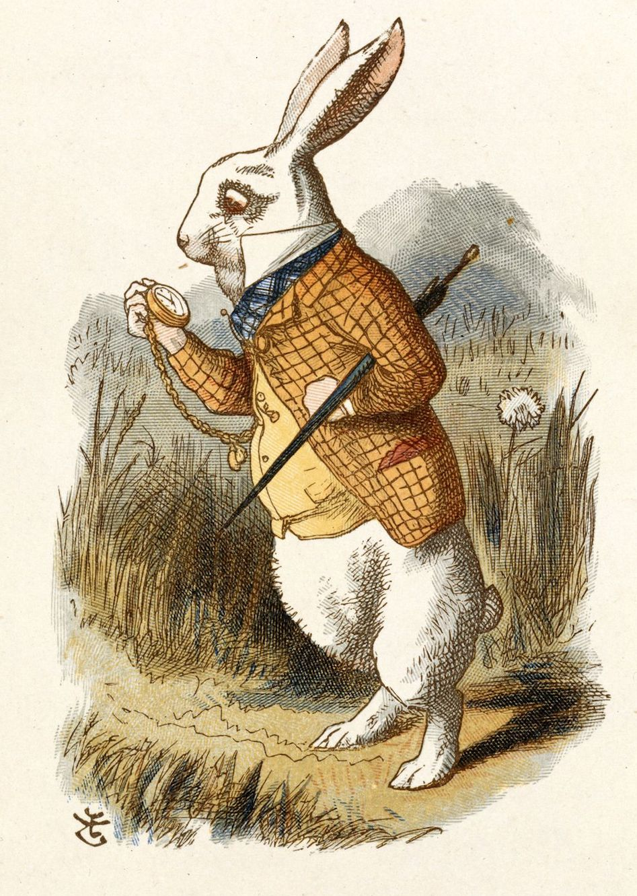
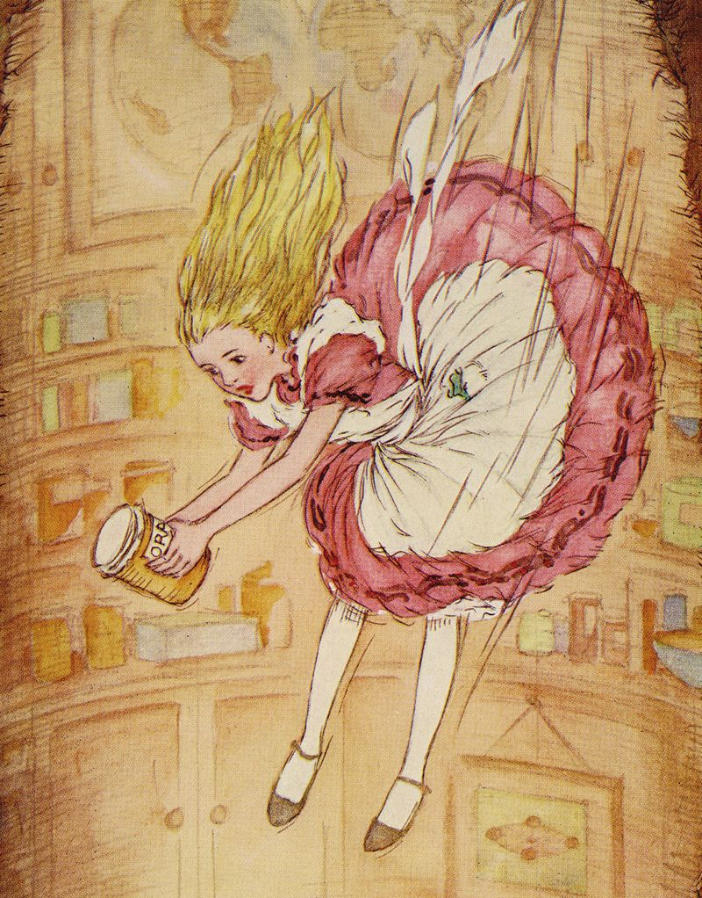

Alice was beginning to get very tired of sitting by her sister on the bank, and of having nothing to do. Once or twice she had peeped into the book her sister was reading, but it had no pictures or conversations in it, "and what is the use of a book," thought Alice, "without pictures or conversations?"
topSo she was considering in her own mind (as well as she could, for the day made her feel very sleepy and stupid), whether the pleasure of making a daisy-chain would be worth the trouble of getting up and picking the daisies, when suddenly a White Rabbit with pink eyes ran close by her. There was nothing so very remarkable in that, nor did Alice think it so very much out of the way to hear the Rabbit say to itself, "Oh dear! Oh dear! I shall be too late!"
But when the Rabbit actually took a watch out of its waistcoat-pocket and looked at it and then hurried on, Alice started to her feet, for it flashed across her mind that she had never before seen a rabbit with either a waistcoat-pocket, or a watch to take out of it, and, burning with curiosity, she ran across the field after it and was just in time to see it pop down a large rabbit-hole, under the hedge. In another moment, down went Alice after it!
The rabbit-hole went straight on like a tunnel for some way and then dipped suddenly down, so suddenly that Alice had not a moment to think about stopping herself before she found herself falling down what seemed to be a very deep well. Either the well was very deep, or she fell very slowly, for she had plenty of time, as she went down, to look about her. She looked at the sides of the well and noticed that they were filled with cupboards and book-shelves.
